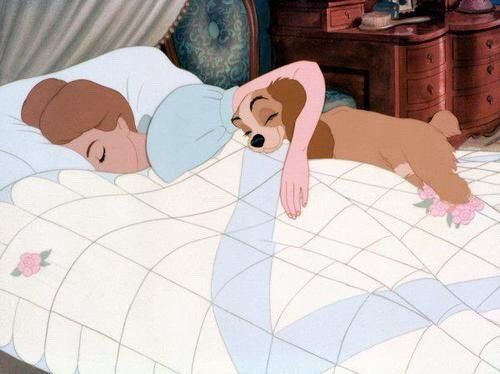

Kitap Okumanın Faydaları

Kitap Dünyası
Merhaba ben Şevval! Bir kitap kurdu olarak size okuduğum en etkileyici kitapları öneriyorum.
Anasayfa
Günlük yaşamın stresli karmaşasından biraz kurtulmak için her birey kendine en uygun hobiyi belirler. Bu hobiler içinde sizlere en verimli ve en çok faydası dokunacak olanın kitap okumak olduğunu söylesek! İnsan doğduğu zaman sıfır bilgi ile dünyaya gelir. Zamanla etrafında olup bitenle bir şeyler öğrenmeye başlar.
Yapılan istatistiklere göre kitap okuyan toplumların diğer toplumlara nazaran gelişmişlik ve kültür seviyeleri oldukça yüksektir.
Olaylara bakış açıları ve müdahaleleri her zaman daha iyi durumdadır. Ve tabi; kitap okumak insan ruhuna en iyi gelen ilaçtır.
Birçoğu bilimsel olarak kanıtlanmış bazıları ise deneyimlerle belirlenmiş olan kitap okumanın kanıtlanmış 10 faydasından bahsedeceğiz.
1-Stresle Baş Etmenin Yolu Kitap Okumak
Bilimsel olarak kanıtlanmış kitap okumanın faydalarından biri de stresle baş edebilmekir. Yoğun ve yorucu bir geçen günün arkasından akşam uyumadan önce 30 sayfalık bir okumanın ruhsal açıdan sizleri rahatlattığı bilinmektedir.
2- Kelime Dağarcığınız Gelişir
Kitap okumanın en iyi faydalarından biri kelime dağarcığınızı geliştirmesidir. Kitaplarda sıklıkla kullanılan fakat bizlerin günlük konuşma dilimizde kullanmadığımız kelimeleri öğrenmiş olmak karşımızdaki insanı etkilemede oldukça başarılı bir yöntemdir. Bu sizin daha kültürlü ve kendine özgüveni olan biri olmanıza yardım eder.
3- Kitap Okumak Hafıza Sorunlarının Çözümüdür
Özellikle yaşlanma ile ortaya çıkan hafıza sorunlarının en etkili çözümü kitap okuyarak zihinsel aktivitelerin canlı tutulmasıdır. Kitap okuyan insanlarda Alzheimer gibi hastalıklara yakalanma riskleri %50 oranlarında düşmektedir. Zihin için en iyi egzersiz bu nedenle kitap okumaktır. Kitap okumak neden önemlidir sorusunun en doğru cevabı bu olabilir.
4- Yaşamı Sevmek İçin Bir Nedendir
Günlük yaşamın stresi çoğu zaman hayattan koparak hantal bir yaşam sürmemize neden olur. Özellikle edebiyat türündeki kitaplar kurguları ile size farklı bir dünya sunar. Kitap okuyan insanların umutları her daim taze kalır.
5- Kaliteli Uyku için Kitap Okumak

Uykuya dalamayan insanlar için bilim adamların önerdiği yöntemlerden biri olan kitap okumak bilimsel açıdan kanıtlanmış bir tekniktir. Uykudan önce okunacak birkaç sayfa ya da pasaj rahatlamanıza sebep olacaktır.
6- Kitap Okuma Alışkanlığınız Bulaşıcıdır!

Anne-babaların üzerine düşen en büyük sorumluluklardan biri çocuklarına kitap okuma alışkanlığı kazandırmasıdır. Okuyan anne baba çocuklar için iyi bir örnek olur ve kitap okuma çocuklarda düzenli bir alışkanlık haline gelir.
7- Kendinizi Daha İyi İfade Edersiniz
Bilginiz artacak, kelime hazneniz gelişecek dolayısı ile kendinizi daha iyi ifade etmiş olacaksınız. İletişimi gelişmiş bireyler gerek sosyal yaşamları gerekse iş yaşamlarında başarıyı çok kolay yakalayabilirler.
8-Karar Verme Mekanizmanız Güçlenir
Bireyin yaşamı boyunca hayatının önemli dönemlerinde karar vermesi gereken konular oluşabilir. Bu tarz kritik durumlarda çok kitap okuyan bireyler artıyı eksiyi doğru şekilde ölçerek kararlarını en doğru şeklini belirleyebilirler.
9-Kitap Okumak Etkili Bir İlaçtır

Kitap okumayı hiç ilaç olarak düşündünüz mü? Evet, kitaplar yalnızlık çektiğinizde en sevimli ilacınız olacaktır. Ayrıca grip ile boğuşuyor ve yataktan çıkamıyorsanız bir kitap ile asla sıkılmadan o yatakta yatabilirsiniz. İşte bu nedenle kitap okumak etkili bir ilaçtır.
10-Genel Kültürünüz Artar

Kitap okumak her zaman için sizlere yeni şeyler katar. Örneğin kişisel gelişim alanındaki kitaplar sizi yaşama daha iyi tutunmanızı sağlar. Hangi türden kitap okursanız okuyun mutlaka bilmediğiniz bir konuda bilinçlenmenizi sağlayacaktır.